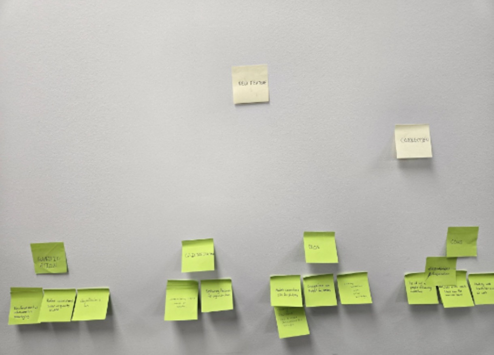
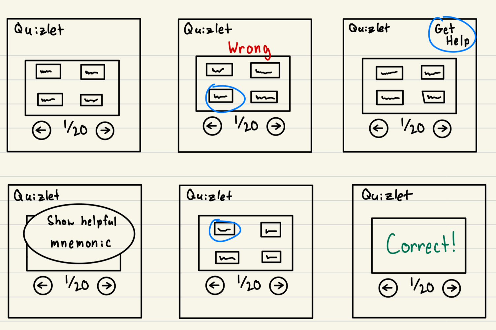
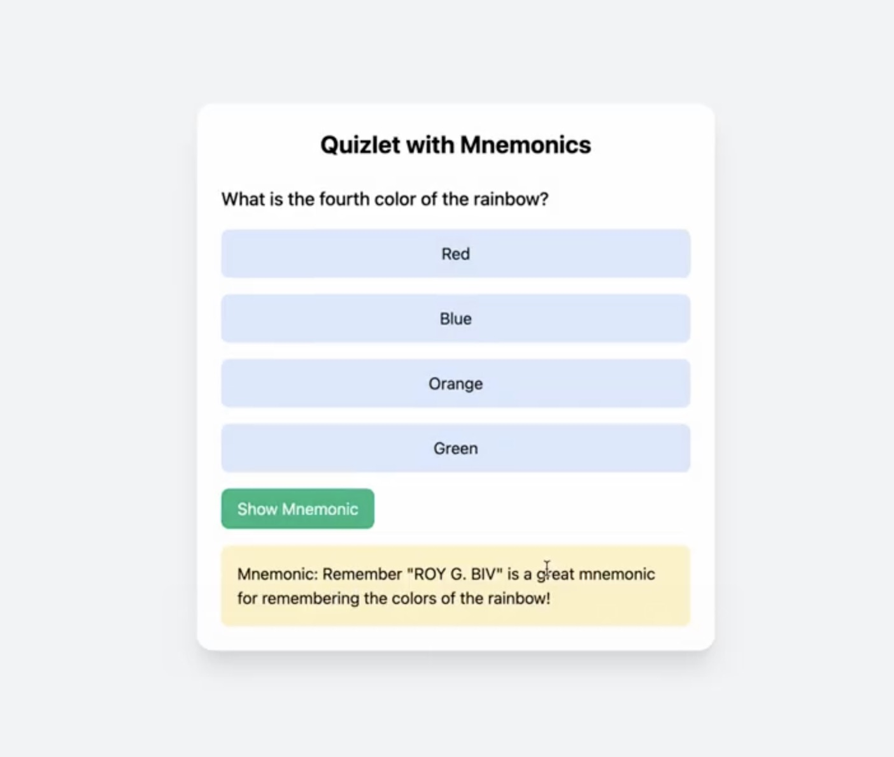
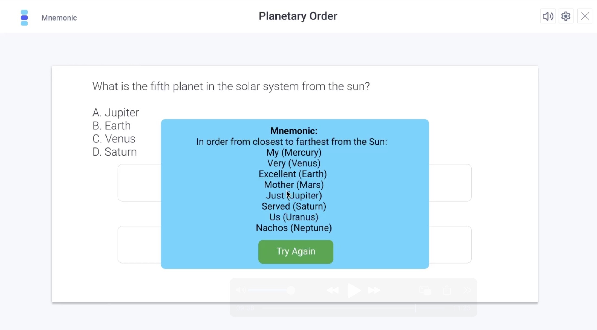

This project focuses on redesigning the Quizlet platform to enhance its user experience, adding new features that support better learning and customization for users. We worked in a team focused on creating new features that improved user's component skills.
Figma, Affinity Diagramming, HTML, CSS, JavaScript
Throughout the development of this project, we conducted multiple rounds of user testing, allowing us to refine and improve our design. Here's how the project evolved:
During the first step of the redesign process, we created a simple affinity map for what people like and dislike about using quizlet, and we also created a person for a person that uses quizlet.

Based on our affinity diagramming and our persona creation, we began creating low fidelity prototypes that looked like the one underneath that showed simply how they would work.

After the creation of some simple designs of low fidelity, we moved on to create medium fidelity prototypes that have small simple functionality and could easily show what the feature was meant to do

After conducting some research and user testing, we proceeded forward to create high fidelity clickable prototypes that exemplified exaclty what we wanted the features to do
